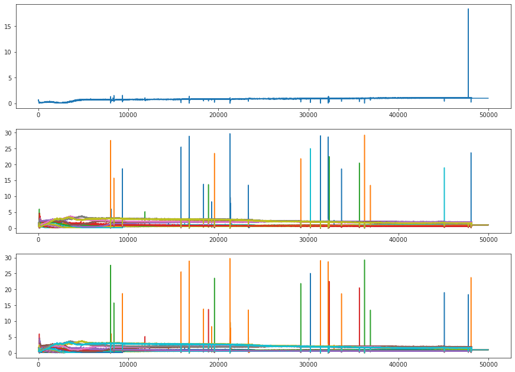

(13) Fit – cuda1¶
Motivation: Fitting notebook, cuda1
# HIDE CODE
import os, sys
from IPython.display import display
# tmp & extras dir
git_dir = os.path.join(os.environ['HOME'], 'Dropbox/git')
extras_dir = os.path.join(git_dir, 'jb-MTMST/_extras')
fig_base_dir = os.path.join(git_dir, 'jb-MTMST/figs')
tmp_dir = os.path.join(git_dir, 'jb-MTMST/tmp')
# GitHub
sys.path.insert(0, os.path.join(git_dir, '_MTMST'))
from vae.train_vae import TrainerVAE, ConfigTrainVAE
from vae.vae2d import VAE, ConfigVAE
from analysis.opticflow import *
from figures.fighelper import *
# warnings, tqdm, & style
warnings.filterwarnings('ignore', category=DeprecationWarning)
from tqdm.notebook import tqdm
from rich.jupyter import print
%matplotlib inline
set_style()
Trainer¶
vae = VAE(ConfigVAE(
'fixate2', n_enc_cells=1, n_dec_cells=1, n_enc_nodes=3, n_dec_nodes=2,
n_latent_scales=3, n_groups_per_scale=8, n_latent_per_group=20,
))
tr = TrainerVAE(
model=vae,
cfg=ConfigTrainVAE(
lr=0.004, batch_size=1000, epochs=400, grad_clip=1000,
warm_restart=1, warmup_portion=0.025,
lambda_anneal=True, lambda_init=1e-7, lambda_norm=1e-4,
kl_beta=0.20, kl_anneal_cycles=1, kl_anneal_portion=0.3, kl_const_portion=1e-4),
device='cuda:1',
)
vae.cfg.total_latents()
280
vae.print()
vae.scales
+--------------+------------+ | Module Name | Num Params | +--------------+------------+ | VAE | 16.1 Mil | | --- | --- | | stem | 320 | | pre_process | 151.6 K | | enc_tower | 8.3 Mil | | enc0 | 66.0 K | | enc_sampler | 1.7 Mil | | dec_sampler | 1.7 Mil | | expand | 234.2 K | | dec_tower | 3.8 Mil | | post_process | 67.9 K | | out | 578 | +--------------+------------+
[8, 4, 2]
len(vae.all_conv_layers), len(vae.all_log_norm)
(151, 117)
Review train options¶
print(f"{vae.cfg.name()}\n{tr.cfg.name()}")
fixate2_k-32_z-20x[2,4,8]_enc(1x3)-dec(1x2)-pre(1x3)-post(1x3) ep400-b1000-lr(0.004)_beta(0.2:1x0.3)_lamb(0.0001)_gr(1000)
print({
k: v for k, v in vars(vae.cfg).items() if
all(e not in k for e in ['useful', 'dir', 'path', 'file'])
})
{ 'sim': 'fixate2', 'n_ch': 32, 'ker_sz': 2, 'input_sz': 17, 'n_enc_cells': 1, 'n_enc_nodes': 3, 'n_dec_cells': 1, 'n_dec_nodes': 2, 'n_pre_cells': 3, 'n_pre_blocks': 1, 'n_post_cells': 3, 'n_post_blocks': 1, 'n_latent_scales': 3, 'n_latent_per_group': 20, 'n_groups_per_scale': 8, 'spectral_norm': 0, 'separable': False, 'compress': True, 'use_bn': False, 'groups': [8, 4, 2], 'seed': 0, 'balanced_recon': True, 'activation_fn': 'swish', 'residual_kl': True, 'scale_init': False, 'ada_groups': True, 'use_se': True }
print(vars(tr.cfg))
{ 'lr': 0.004, 'epochs': 400, 'batch_size': 1000, 'warm_restart': 1, 'warmup_portion': 0.025, 'optimizer': 'adamax_fast', 'optimizer_kws': {'betas': (0.9, 0.999), 'weight_decay': 0.0003, 'eps': 1e-08}, 'scheduler_type': 'cosine', 'scheduler_kws': {'T_max': 130.0, 'eta_min': 1e-05}, 'ema_rate': 0.999, 'grad_clip': 1000, 'chkpt_freq': 20, 'eval_freq': 5, 'log_freq': 10, 'use_amp': False, 'kl_beta': 0.2, 'kl_beta_min': 0.0001, 'kl_balancer': 'equal', 'kl_anneal_cycles': 1, 'kl_anneal_portion': 0.3, 'kl_const_portion': 0.0001, 'lambda_anneal': True, 'lambda_init': 1e-07, 'lambda_norm': 0.0001, 'spectral_reg': False }
Train¶
# comment = f"..._{tr.cfg.name()}"
tr.train(comment=tr.cfg.name())
epoch # 400, avg loss: 12.146123: 100%|██████████| 400/400 [40:45:45<00:00, 366.86s/it]
Eval¶
%%time
val, loss = tr.validate(use_ema=False)
val_ema, loss_ema = tr.validate(use_ema=True)
CPU times: user 2min 42s, sys: 43 s, total: 3min 25s
Wall time: 17min 19s
loss_summary = {
k: {
'vae': np.round(v.mean(), 2),
'ema': np.round(loss_ema[k].mean(), 2),
} for k, v in loss.items()
}
print(f"{vae.cfg.name()}\n{tr.cfg.name()}\n\n{loss_summary}\n")
fixate2_k-32_z-20x[2,4,8]_enc(1x3)-dec(1x2)-pre(1x3)-post(1x3) ep400-b1000-lr(0.004)_beta(0.2:1x0.3)_lamb(0.0001)_gr(1000) {'epe': {'vae': 3.79, 'ema': 3.8}, 'kl': {'vae': 41.86, 'ema': 41.85}}
for k, v in val.items():
if 'fig' in k:
print(f"{k} (VAE)")
display(v)
print(f"{k} (EMA)")
display(val_ema[k])
print('-' * 70)
fig/sample (VAE)
fig/sample (EMA)
----------------------------------------------------------------------
fig/regression (VAE)
fig/regression (EMA)
----------------------------------------------------------------------
fig/bar (VAE)
fig/bar (EMA)
----------------------------------------------------------------------
fig/bar_aux (VAE)
fig/bar_aux (EMA)
----------------------------------------------------------------------
fig/mutual_info (VAE)
fig/mutual_info (EMA)
----------------------------------------------------------------------
len(tr.stats['grad'])
182
np.quantile(tr.stats['grad'], [0.5, 0.7, 0.9, 1])
array([5.99852881e+03, 3.31414691e+04, 6.06242619e+05, 3.20467665e+11])
np.quantile(tr.stats['loss'], [0.5, 0.7, 0.9, 1])
array([1.83597097e+01, 3.33677979e+01, 1.99485512e+02, 5.41584938e+05])
gamma = np.stack(tr.stats['gamma'])
gamma.shape
(160000, 30)
fig, axes = create_figure(3, 1, (15, 11))
axes[0].plot(gamma[:50000, 0])
axes[1].plot(gamma[:50000, 1:])
axes[2].plot(gamma[:50000]);
